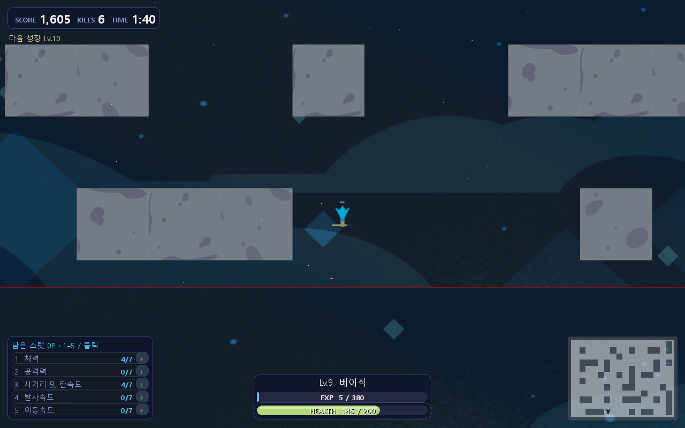
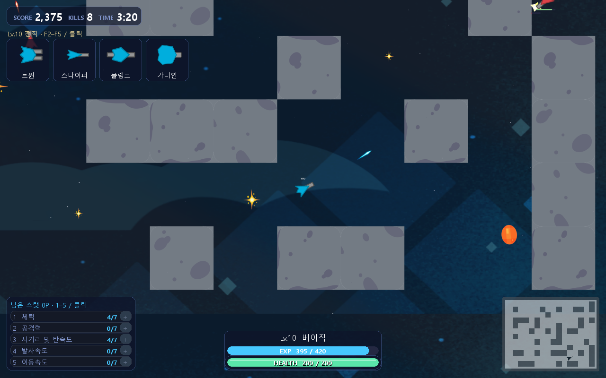
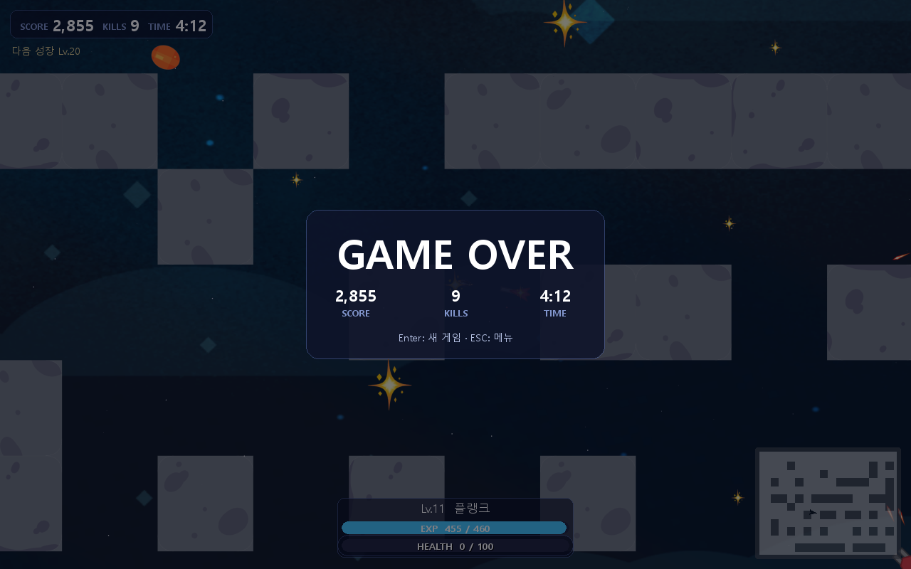

프로토타입 · 수치 하드코딩
회전만 연속화했을 때,
회전만 연속화했을 때,
무엇을 바꿔서 어떤 결론이 났는가
기존 기본 모델(이산 행동 계열, 1,474,560 step 순수 PPO)에서 회전 출력만 tanh-Gaussian 연속 분포로 바꾸고, 나머지(이동 9종·발사·강화 6종·진화 5종)는 그대로 이산 선택으로 둔 채 추가 PPO 학습 2,000,000 step을 5개 구간(001~005)으로 나눠 진행했습니다. 이동·조준(회전·발사) 중 어느 부분을 동결하고 어느 부분을 계속 학습시킬지가 매 분기의 변수입니다. 위 분기도의 상자를 클릭하면 해당 실험 페이지로 이동합니다.
⚠ 진화 버그 — 001~005의 모든 "진행 평가" 수치는 수정 전(진화 미적용) 상태로 측정됨 — 디코더가 진화 선택 인덱스를
numpy.int64로 넘겨 공용 게임 코어가 무시했고, 2,000,000 step 내내 기체가 계속 "rookie" 등급에 머물렀습니다. 화면 재생에서 발견한 뒤 디코더만 고치고 가중치는 그대로 유지했습니다. 이 페이지의 001~005 진행 표·분포 막대는 모두 버그가 있는 상태에서 측정한 값이며, 005 페이지 하단의 "수정 후 최종 비교"만 진화가 실제로 적용된 결과입니다.안정성 확인이 왜 필요한가 — mean만 보면 꾸준히 좋아진 것처럼 보이지만 소수의 고득점 시드에 쉽게 끌려갑니다. 그래서 각 실험 페이지에 점수·생존시간 분포 막대(p25~p75 구간 · median · mean · max)를 넣었습니다.
부모 모델 (이 분기 밖) ·
gpt_training 계열의 순수 PPO 기본 모델(018, 1,474,560 step, 이산 MultiDiscrete 행동) — 원본 벡터 관찰 5,139차원과 기존 CNN·개체 특징 추출기를 그대로 재사용하고, 회전 헤드만 새로 얹어 0에서 학습을 시작합니다. 학습 예산 2,000,000 step = 001(300k) + 002(200k, 폐기) + 003(500k) + 004(500k, 폐기) + 005(500k, 최종).001_aim_adaptation
0 → 300,000 step (벽·적 없는 천체 전용 환경)기준 체크포인트 확립변경한 것: 기존 이산 PPO 몸체(이동·CNN·성장·가치함수)는 동결(
freeze_body)하고, 회전만 새 tanh-Gaussian 헤드로 교체해 적도 벽도 없는 쉬운 천체 환경에서 처음 학습(lr 0.0003, entropy 0.003, score_v5)| label | step | 평가 조건 | score(120s) | score(최종) | survival |
|---|---|---|---|---|---|
| baseline(기존 018) | — | 4seed·200s cap | 803.75 | 1,057.5 | 155.08s |
| 001 | 100,000 | 4seed·200s cap | 695.0 | 1,136.25 | 166.27s |
| 001 | 200,000 | 4seed·200s cap | 1,188.75 | 1,402.5 | 162.40s |
| 001 (선발 기준) | 300,000 | 4seed·200s cap | 1,243.75 | 1,696.25 | 160.30s |
| baseline(기존 018) | — | 8seed·200s cap | 1,026.875 | 1,285.0 | 130.78s |
| 001 (넓은 재확인) | 300,000 | 8seed·200s cap | 940.0 | 1,161.25 | 124.90s |


4시드로는 이겼지만 8시드로는 졌다 — 선발에 쓴 4개 검증 시드에서는 baseline을 넘었지만(1,696 vs 1,285), 더 넓은 추가 8개 시드로 재확인하자 baseline(1,285)보다 낮은 1,161.25로 나왔다. 표본이 작을 때 순위를 과신하면 안 된다는 걸 보여주는 사례 — 그래도 "연속 회전 학습 자체가 작동한다"는 건 확인됐으므로 이 체크포인트를 002/003 두 분기의 공통 부모로 사용.
001(300k)에서 2갈래로 분기 — 같은 부모: 002(현재) · 003. 부모 페이지: 001_aim_adaptation
002_full_adaptation
300,000 → (500,000에서 중단)생존 저하 · 조기 중단 · 폐기변경한 것:
freeze_body를 꺼서 몸체(이동·CNN·성장·가치함수)까지 전부 동결 해제 + lr 0.0003→0.0001, entropy 0.003→0.002, reward_profile score_v5→score_v7 (실제 기본 게임에서 전체 정책을 한 번에 적응시키려는 시도)| 바뀐 설정 | 부모(001) | 002 |
|---|---|---|
| freeze_body | true | false |
| learning_rate | 0.0003 | 0.0001 |
| entropy | 0.003 | 0.002 |
| reward_profile | score_v5 (천체 전용) | score_v7 (실제 기본 게임) |
| label | step | 평가 조건 | score(최종) | survival |
|---|---|---|---|---|
| before(001) | 300,000 | 8seed·200s cap | 1,161.25 | 124.90s |
| 002 | 400,000 | 8seed·200s cap | 956.25 | 91.39s |
| 002 (중단 시점) | 500,000 | 8seed·200s cap | 1,446.875 | 123.18s |
몸체까지 한꺼번에 풀었더니 생존부터 무너짐 — 400,000 step 생존 평균이 91.39초로, 같은 시드의 baseline(130.78초)보다도 낮게 떨어짐. 500,000 step에서 점수는 회복됐지만(1,446.875) 여전히 baseline 수준을 넘지 못해 계획했던 700,000 step을 다 채우지 못하고 조기 중단. 조준과 몸체를 동시에 풀어서 적응시키는 접근은 폐기하고, 001의 300,000 체크포인트에서 다시 분기해 "조준은 고정, 몸체만 천천히"로 바꾼 것이 003.
001(300k)에서 2갈래로 분기 — 같은 부모: 002 · 003(현재). 부모 페이지: 001_aim_adaptation
003_body_stability
300,000 → 800,000 step네 조건 충족 · 다음 분기의 부모변경한 것: 002와 반대로
freeze_aim을 켜 조준망(회전 헤드)은 완전히 고정하고, 몸체(이동·성장·가치함수)만 아주 낮은 lr 0.00003으로 천천히 적응 (002의 lr 0.0001보다 3배 이상 낮음)| 바뀐 설정 | 부모(001) | 003 |
|---|---|---|
| freeze_body | true | false |
| freeze_aim | — (조준 자체가 신규 학습 대상) | true (새로 추가) |
| learning_rate | 0.0003 | 0.00003 |
| reward_profile | score_v5 (천체 전용) | score_v7 (실제 기본 게임) |
002와 동일한 부모(001@300,000)에서 분기 — 002의 실패 이후 시작한 게 아니라 독립적으로 같은 지점에서 다시 분기한 형제 실험.
| label | step | 평가 조건 | score(최종) | survival |
|---|---|---|---|---|
| before(001) | 300,000 | 8seed·200s cap | 1,161.25 | 124.90s |
| 003 | 600,000 | 8seed·200s cap | 1,892.5 | 161.88s |
| 003 | 700,000 | 8seed·200s cap | 2,139 | 176s |
| 003 (선발 · 네 조건 충족) | 800,000 | 8seed·200s cap | 2,823.75 | 195.6s |

002와 정반대 전략이 성공 — "조준은 건드리지 말고 몸체만 아주 천천히"가 효과적이었다. 800,000 step에서 8개 시드 중 거의 전부가 200초(cap)까지 생존(p25조차 196초)하고 점수도 꾸준히 올라 네 승격 조건을 모두 충족. 이 체크포인트(
evaluated_000800000.zip)가 004·005 두 분기의 공통 부모가 됨. 안정성: 이 시점 기준으로는 p25/median/mean이 서로 가까워 vector_only 계열에서 보였던 "p25=0" 같은 불안정은 없음 — 다만 8시드뿐이라 표본은 여전히 작음.003(800k)에서 2갈래로 분기 — 같은 부모: 004(현재) · 005. 부모 페이지: 003_body_stability
004_body_continuation
800,000 → 1,300,000 step부모(800k) 순위를 못 넘김변경한 것: 없음 — 003과 완전히 같은 설정(
freeze_aim, lr 0.00003, entropy 0.002, score_v7, 같은 eval seed 4개)으로 그냥 500,000 step 더 돌림설정 diff: 없음 — 003의 마지막 체크포인트에서 동일 하이퍼파라미터로 이어학습("일단 더 돌려본" run).
| label | step | 평가 조건 | score(최종) | survival |
|---|---|---|---|---|
| before(003) | 800,000 | 8seed·200s cap | 2,823.75 | 195.6s |
| 004 | 900,000 | 8seed·200s cap | 2,287 | 155s |
| 004 | 1,100,000 | 8seed·200s cap | 2,487 | 180s |
| 004 (종료) | 1,300,000 | 8seed·200s cap | 2,013 | 160s |
800,000을 끝까지 한 번도 못 넘김 — 003의 005와 마찬가지로 "그대로 더 돌리기"는 추가 개선을 만들지 못했다(mean 2,823.75 → 2,013).
best_timesteps가 전체 run 동안 부모의 800,000에 그대로 고정된 것으로 이 사실이 기록에 남아 있음. 004는 재사용하지 않고 003의 800,000에서 다시 분기 — 이번엔 "몸체 대신 조준을 더 학습"하는 005로.003(800k)에서 2갈래로 분기 — 같은 부모: 004 · 005(현재). 부모 페이지: 003_body_stability
005_aim_precision
800,000 → 1,300,000 step (계보상 1,200,000 채택)최종 선택 모델변경한 것: 004와 반대로 이번엔
freeze_body를 켜 몸체(이동·성장·CNN)는 고정하고 freeze_aim은 꺼서 조준(회전·발사)만 다시 학습 재개. lr 0.00003→0.00002, entropy 0.002→0.001로 더 보수적으로| 바뀐 설정 | 부모(003) | 005 |
|---|---|---|
| freeze_body | false | true (새로 추가) |
| freeze_aim | true | false |
| learning_rate | 0.00003 | 0.00002 |
| entropy | 0.002 | 0.001 |
004와 동일한 부모(003@800,000)에서 분기 — 004의 실패를 본 뒤가 아니라 "동결 대상을 반대로 바꿔본다"는 독립적 가설.
| label | step | 평가 조건 | score(최종) | survival |
|---|---|---|---|---|
| before(003) | 800,000 | 8seed·200s cap | 2,823.75 | 195.6s |
| 005 (dev 채택, 버그 상태) | 1,200,000 | 8seed·200s cap | 3,037.5 | 179.88s |
| 005 (run 종료) | 1,300,000 | 8seed·200s cap | 2,615 | 189s |
진화 버그 발견 — 디코더만 고치고 가중치는 그대로 재검증 — 2,000,000 step 전체를 끝내고 005의 1,200,000 체크포인트를 선택한 뒤, 실제 화면 재생에서 기체가 계속 "rookie" 등급에 머무는 것을 보고 추적한 결과, 디코더가 진화 선택 인덱스를 Python
int가 아닌 numpy.int64로 넘겨 공용 게임 코어가 isinstance(index, int) 검사에서 무시하고 있었습니다. 공용 게임 코드는 건드리지 않고 디코더 한 곳만 map(int, choices)로 고쳤습니다 — 가중치(SHA256 205b19d9…)는 그대로입니다. 위 표·막대의 "dev 채택" 수치는 모두 버그가 있던 상태의 측정값입니다.

수정 후 최종 비교(새 20시드, 400s cap, greedy) 기존 기본모델 대비: 1,508.0→2,902.0 (최종 평균 +92.4%, 120s 평균 1,049.25→1,530.0 +45.8%, 생존 222.67s→262.84s, 처치 4.30→8.25, 400s 생존 2/20→5/20)
held-out 개별 시드 점수 — 새 20개 시드 (61001~62910, 수정 후 1회만 평가)
| 61001 | 61102 | 61203 | 61304 | 61405 | 61506 | 61607 | 61708 | 61809 | 61910 | 62001 | 62102 | 62203 | 62304 | 62405 | 62506 | 62607 | 62708 | 62809 | 62910 | |
|---|---|---|---|---|---|---|---|---|---|---|---|---|---|---|---|---|---|---|---|---|
| baseline(기존 018) | 1675 | 1595 | 1515 | 1450 | 1235 | 1475 | 1645 | 610 | 960 | 2355 | 775 | 1095 | 940 | 1435 | 1670 | 2375 | 2405 | 1935 | 1190 | 1825 |
| candidate(005, 수정 후) | 2855 | 835 | 2020 | 7195 | 550 | 3085 | 1110 | 5980 | 1790 | 1410 | 2600 | 3035 | 4215 | 6055 | 3305 | 3740 | 1815 | 2750 | 1075 | 2620 |
14승 6패, 꾸준한 개선이라기보다 상한이 크게 열린 쪽 — 같은 시드 20개 중 candidate가 14개에서 이기지만, 6개는 오히려 baseline보다 낮다(예: 61102 835<1595, 61405 550<1235, 61809 1790<960은 이겼지만 61910 1410<2355는 짐). mean 차이의 bootstrap 95% 구간은 +594~+2,282로 0을 포함하지 않아 개선 자체는 통계적으로 유의하지만, 생존시간 차이 구간(-32.18~+111.79초)은 0을 포함해 생존 개선은 아직 불확실. 최종 채택 모델은
selected_model.zip(SHA256 205b19d9…), 005 계보 1,200,000 step. 이 결과는 "회전만 연속화"의 순수 효과가 아니라 추가 PPO 2,000,000 step + 동결 전략 선택 + score_v7 보상이 함께 작용한 결과다.